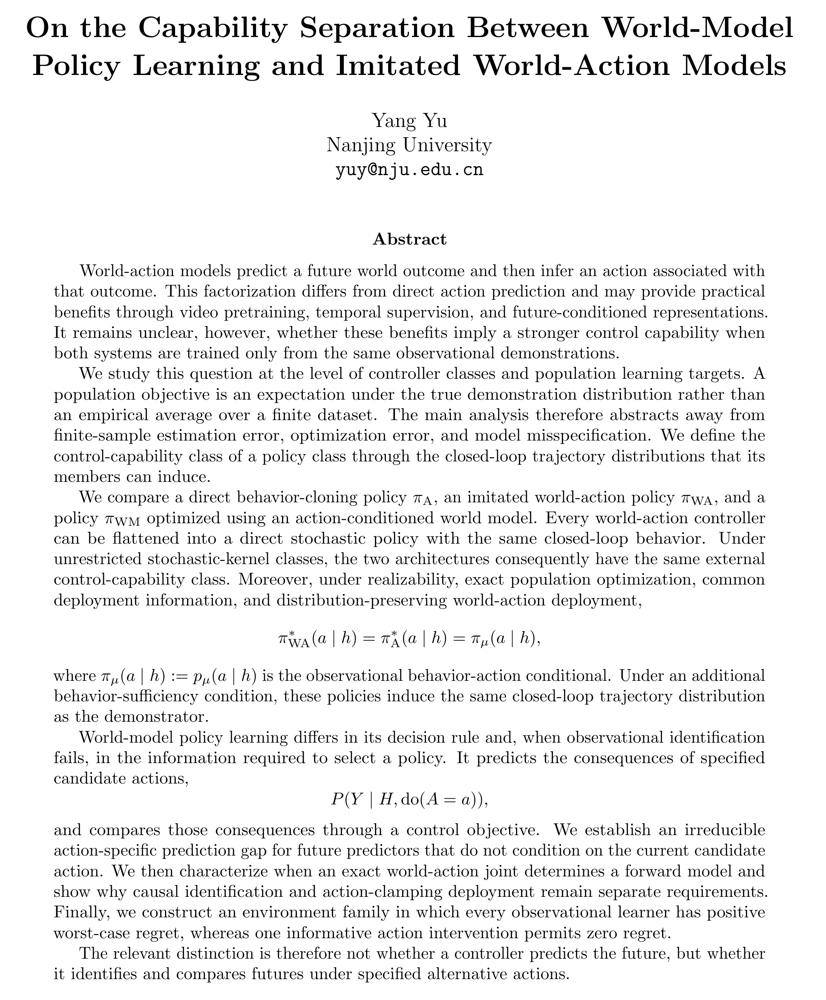

Title and abstract excerpt
On the Capability Separation Between World-Model Policy Learning and Imitated World-Action Models
世界模型策略学习与模仿式世界–动作模型的能力分界
原文题目与摘要摘录；保留原始文字和公式，不以重排文字或生成示意图替代原文。

世界模型策略学习与模仿式世界–动作模型的能力分界
原文题目与摘要摘录；保留原始文字和公式，不以重排文字或生成示意图替代原文。